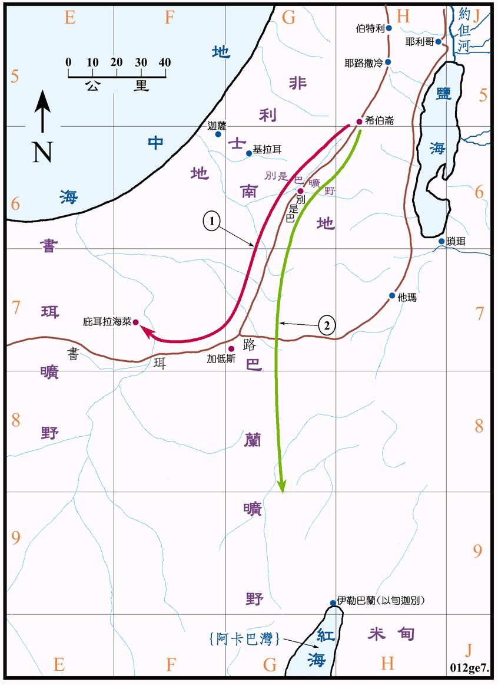

2080～1943BC

行动线说明
| 序号 | 圣经 | 说明 |
|---|---|---|
| 1 | 创16章 | 亚伯兰的妾夏甲怀孕后被撒莱苦待，出走后在旷野遇见神的使者，蒙了神的祝福，就回至亚伯兰的家中不久之后就生了以实玛利。 |
| 2 | 创21:14-21 | 夏甲和以实玛利被逐，在别是巴旷野蒙神祝福后，去到巴兰旷野成长。 |
| 创25:12-18 | 以实玛利的后裔和其住处。(见创图03) |
以实玛利约於2080BC 出生，於2065BC 离开亚伯拉罕，137 岁 (1943BC) 时去世。
以实玛利是亚伯拉罕从妾埃及人夏甲所生的儿子，大约在十五岁时就离开了亚伯拉罕。他最初居住在巴兰旷野，他的十二个儿子则往东发展，「他子孙的住处在他众弟兄的东边，从哈腓拉直到埃及前的书珥，正在亚述的道上」，在<创图三>中可见，大约是在阿拉伯沙漠的北部，日后他们成为沙漠中首要的民族，而他们的名字以实玛利人也可作为沙漠民族的总称。他们再又与阿卡巴湾东岸的米甸人融合，所以这两个民族的名字常常可以通用。